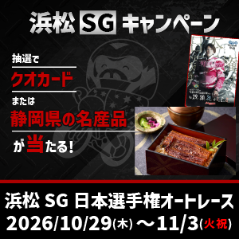
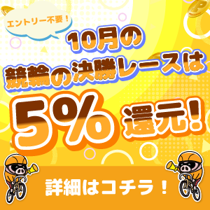
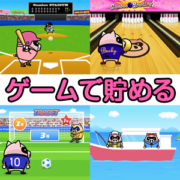

SCR-01ホーム
通知
入金
昨日
本日開催
明日
競輪
SG2日目
京王閣
10R
20:33
GⅠ4日目
小倉
10R
20:55
GⅡ最終日
玉野
10R
20:48
GⅢ最終日
いわき平
10R
20:41
FⅠ最終日
松戸
1R
21:02
FⅡ2日目
伊東
1R
21:30
FⅡ初日
平塚
発売終了
オートレース
GⅡ2日目
川口
11R
20:40
普通3日目
飯塚
9R
20:31
森且行選手を応援しよう！
特設ページ
GⅡ2日目
川口
3R
16:30
GⅡ2日目
川口
11R
20:40
 01.webp
01.webp 02.webp
02.webp
03.webp本日実施中

04.webp 05.jpg
05.jpg
06.webp競輪注目選手
すべて見る
ライン先頭同士で競走得点が突出して高い選手
3森岡正臣
いわき平11R 21:11レース内で唯一の逃げ型となる選手
4倉松涼
玉野11R 21:18直近3走以上連続で勝利している選手
7鈴木良太4連勝
2松山桂輔3連勝
別の自力型選手の後ろをマークする自力型選手
1夏目新吾
京王閣11R 21:05お知らせ
すべて見る
オートレース
2026.10.29NEWキャンペーン
【浜松SG】抽選で鈴木圭一郎選手1,000勝達成記念Tシャツ＋シールが当たる！
ポイント
2026.04.06
「景品に交換」に西武園GⅢオリジナルクオカードが登場！
競輪
2026.04.06
【重要】一部開催のレース数変更について
オートレース
2026.04.05
川口オートレース場 SG日本選手権 特設ページを公開しました
競輪＆オート
2024.04.15
機能リリースのお知らせ(2024年4月18日)